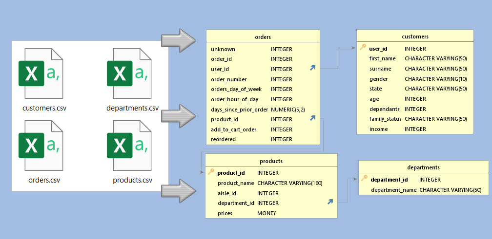

From CSV files to
an SQL Database
I took the CSV files we used in CareerFoundry, for our Instacart Analysis. Then I created SQL databases, in both SQL Server and PostreSQL.

What:
Converting 4 CSV files - that portray to show the orders of Instacart Customers - into an SQL Database.Why:
- Lack of SQL Databases for people to test their skills on.
- See what the issues are with converting to an SQL Database.
- See if I could do it.
- This particular dataset is something CareerFoundry students are familiar with, as we use it with Python. So, we know the answer, now we get to work out how to ask SQL the right question so we get the same answer as we got in Python.
How:
CareerFoundry teaches using PostgreSQL (pgAdmin4). Alex the Analyst teaches using SQL Server. So I created the database using both.I did it with SQL Server first. Then I hit issues re-importing it (so, fellow CF students would not be able to install it). I did it with PostgreSQL - so much smoother, and faster. Smoother and faster may have to do with learning from my issues with SQL Server, but here is my breakdown of pros and cons of SQL Server v PostgreSQL
SQL server V PostgreSQL - recognising column lengths
Product name, which had a max length - measured using LEN in Excel - of 159 - still caused issues in SQL Server. Had to set it to MAX.PostgreSQL accepted nvarchar(160).
SQL server v PostgreSQL - Importing datasets
SQL Server did not like importing files with 32 million entries. I had to break it down into 7 chunks… using the order_day_of_week as a clean cut.PostgreSQL had no such issue - 130 seconds for the full 32 million entries, no real memory drain.
SQL server v PostgreSQL - Exporting the database
When I exported using Scripts in SQL Server - Schemas AND Data - it ended up as a 14GB file.When I created a Backup in PostgreSQL it was 1.4GB
Cleaning out the traps
CareerFoundy set up traps for us to find, and work out, in the Instacart Achievement Datasets.- Duplicates
There were full duplicates of Products, which would not allow me to put product_id as a Primary Key in SQL. But in such an SQL database having the product_id as a primary key is a must, if only to stop employees accidently giving 2 products the same ID.
So I removed these, known - as I had found them while doing the achievement in Python - duplicates, in Excel.
Installing into SQL SERVER
I used the Tasks -> Import Flat File option (it reads the columns names, and also gives suggestions as to what the data type should be) But, as I mentioned above, it did not like the length of the Product Name being 160, 200 or even 250. Despite me checking the max length in Excel, using the LEN function - which returned a max of 159 - this had to be set to nvarchar(MAX), for it to work.The size of the 'orders' CSV file was the next issue. SQL Server could not handle the file with 32 million entries (suprisingly, this was not to do with my computers RAM)
I knew that dataset was going to have to go in in parts, so I researched how to add CSV file data into an existing Table in SQL Server - and the general concensus was to create a table with the new data, set up exactly like the main table and use the INSERT INTO function.
INSERT INTO orders(column1, order_id, user_id, order_number, orders_day_of_week,
order_hour_of_day, days_since_prior_order, product_id, add_to_cart_order, reordered)
SELECT column1, order_id, user_id, order_number, orders_day_of_week, order_hour_of_day,
days_since_prior_order, product_id, add_to_cart_order, reordered FROM day6
WHERE orders_day_of_week NOT IN (SELECT orders_day_of_week FROM orders);
relationships between tables
This would be a highly technical, and a boring read, but we do need to create relationships in between tables. So that, for example the products table knows to look to the departments table to confirm the department_id.This is when I also learned that, despite me knowing it would be good for the department_id's and department_name's to both be unique, you can't have 2 Primary Keys in a table, unless they are both classed as a foreign key in the 2nd table.
So I went and created the relevant relationships, after reinstalling the departments dataset/table.
Exporting the database
Again, another technical and boring read. But, going on StackOverflows general concensus, I exported the Schema and Data using the Tasks -> Generate Scripts function.It ended up being a 14GB file... which I could not get to install into PostgreSQL (or even back into SQL Server) - being able to install it would be a requirement, as it is for other CareerFoundry students.
Installing into postgresql
First I had to create the tables, via scripts. And I had to detail what the Datatypes were myself.CREATE TABLE products (
product_id INT,
product_name VARCHAR(160),
aisle_id INT,
department_id INT,
prices MONEY,
PRIMARY KEY (product_id)
)The full 32 million entries 'orders.csv' went in in 130 seconds, and with no noticeable memory spike!
Creating relationships - Done
Exporting the database
Here I just chose 'Backup', selected Tar file and gave it a name. Less than a minute later I had my SQL file.Lessons learned from this project
- Creating an SQL Database - for me to run queries on - is actually not that hard, the planning of the tables was the main part.
- SQL Server is more work, to install the data, but the data type suggesting is handy for a new DA like me.
- Exporting from SQL Server will give you a big file, but when both are compressed, there is only a difference of 100-200 MB.
The datasets
The original 4 datasets are created by, and therefore belong to, CareerFoundry.While this Database was created for my fellow CareerFoundry students - feel free to request it (My Email is below - or via LinkedIn)